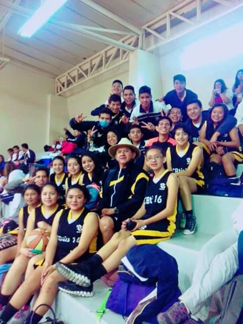

CBTis 16.

| Plantel | CENTRO DE BACHILLERATO TECNOLÓGICO INDUSTRIAL Y DE SERVICIOS No. 16 (CBTIS No. 16) |
|---|---|
| Estado | Puebla |
| Director | Ramos Bravo Anselmo |
| CCT | 21DCT0046P |
| Dirección | Fracc. Ricardo Flores Magon Domicilio Conocido S/N. Atlixco, Puebla. |
| CP | 74240 |
| https://es-la.facebook.com/CBTis-16-Original-248892438580626/ |
Formar personas con conocimientos tecnológicos en las áreas industrial, comercial y de servicios, a través de la preparación de profesionales técnicos y bachilleres, con el fin de contribuir al desarrollo sustentable del país.

Ser una institución que proporcione una formación integral y pertinente de acuerdo a las exigencias derivadas de la competitividad mundial y el entorno y vocación local, además de tener la flexibilidad para satisfacer los intereses, aspiraciones y posibilidades de la población que demanda este nivel educativo en nuestro plantel.

Persona con conocimientos, habilidades y actitudes, capaz de ingresar a empresas de desarrollo de software, diseño gráfico, mantenimiento, outsourcing.
La formación que ofrece la carrera de Técnico en programación permite al egresado, a través de la articulación de saberes de diversos campos, realizar actividades dirigidas a la:
• Instalación y desarrollo de software de aplicación utilizando programación estructurada y orientada a objetos en ambientes web y móviles, con almacenamiento persistente de datos.
• Así como la configuración y administración de plataforma e-learning y Comercio electrónico.
• Desarrolladores de software.
• Analistas de sistemas.
• Analista de programas de cómputo.
• Programador de sistemas de cómputo.
. • Edición de software y edición de software integrada con la reproducción
• Escuelas de computación del sector privado.
• Servicios de diseño de sistemas de cómputo y servicios relacionados.
• Escuelas de computación del sector público.

Profesionista que da mantenimiento a los sistemas de transmisión de potencia utilizando las máquinas herramientas convencionales, de control numérico, máquinas de soldar con arco eléctrico y oxigas auxiliándose de los procesos de ajuste de piezas mecánicas.
Durante el proceso de formación de los cinco módulos, el estudiante desarrollará o reforzará las siguientes competencias profesionales, correspondientes al Técnico en Mecánica Industrial:
• Suelda y ajusta piezas mecánicas.
• Maquina piezas mecánicas en talador y torno.
• Maquina piezas mecánicas en fresadora, rectificadora y cepillo.
• Maquina piezas mecánicas por CNC.
• Mantiene sistemas de transmisión de potencia.
La carrera de Técnico en Electricidad permite al estudiante sustentar la demanda de ocupación de Técnicos Electricistas en el sector productivo y de servicios, capaz de diseñar y realizar instalaciones eléctricas residenciales y comerciales, así como proporcionar mantenimiento a máquinas eléctricas.
Durante el proceso de formación de los cinco módulos, el estudiante desarrollará o reforzará las siguientes competencias profesionales, correspondientes al Técnico en Electricidad.
• Desarrolla instalaciones eléctricas residenciales y comerciales.
• Mantiene los motores y generadores de CA y CC.
• Mantiene en operación los circuitos de control electromagnético y electrónico.
• Mantiene los sistemas de iluminación y de energía renovable.
• Mantiene instalaciones eléctricas de media y baja tensión.
La carrera de Técnico en logística ofrece las competencias profesionales que permiten al estudiante realizar actividades dirigidas a la administración de bienes, planificando los suministros destinados al almacenamiento de manera manual y electrónica, la organización de los nodos logísticos para el transporte de mercancías así como, proveer los servicios y atención al cliente sobre los movimientos y los costos de la cadena logística.
Durante el proceso de formación de los cinco módulos, el estudiante desarrollará o reforzará las siguientes competencias profesionales:
• Supervisa el proceso de suministro de bienes
• Apoya en el proceso de administración del servicio de almacenaje de bienes
• Organiza el transporte de mercancías
• Provee servicio y atención al cliente sobre los movimientos de logística
• Organiza los costos de la cadena logística
El técnico en logística es un profesional que puede trabajar en los departamentos de Compras, Almacenes, Ventas, Logística, Distribución y Transporte, Importación y Exportación, entre otros; con responsabilidad social y desempeño ético, con capacidades de desarrollo autónomo, de liderazgo y de investigación. Competente para diseñar y administrar sistemas logísticos, realizando funciones de consultor, gestor o formador de empresas con proyección social; atendiendo los requerimientos de los sectores productivos de bienes o servicios nacionales e internacionales.
CBTis 16 participando en el desfile
Escolta de CBTis

Feria vocacional en el plantel de CBTis 16

Grupo 4° "H"

Homenaje
Equipo de Basquetball de la institución
Alumnas del plantel